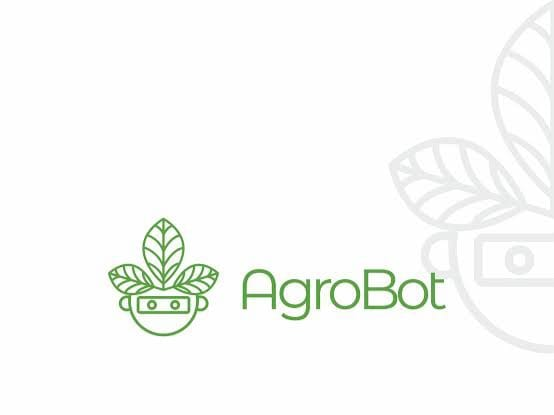
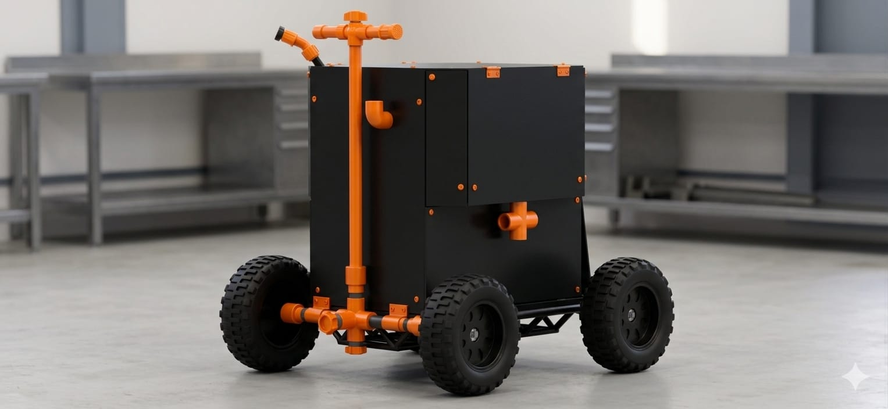
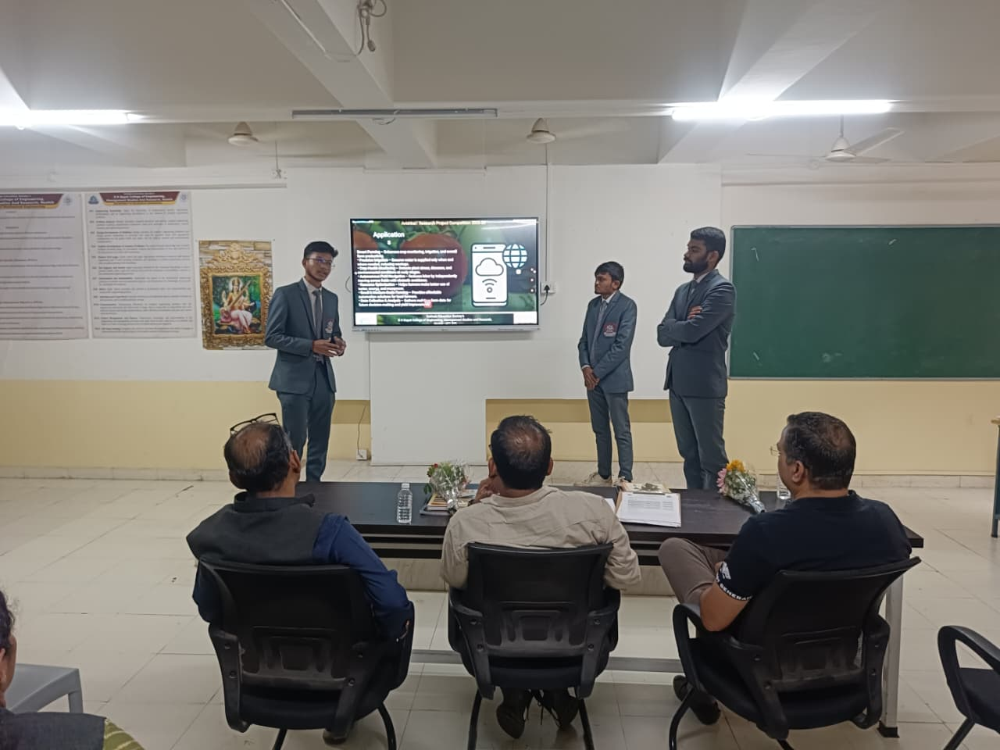
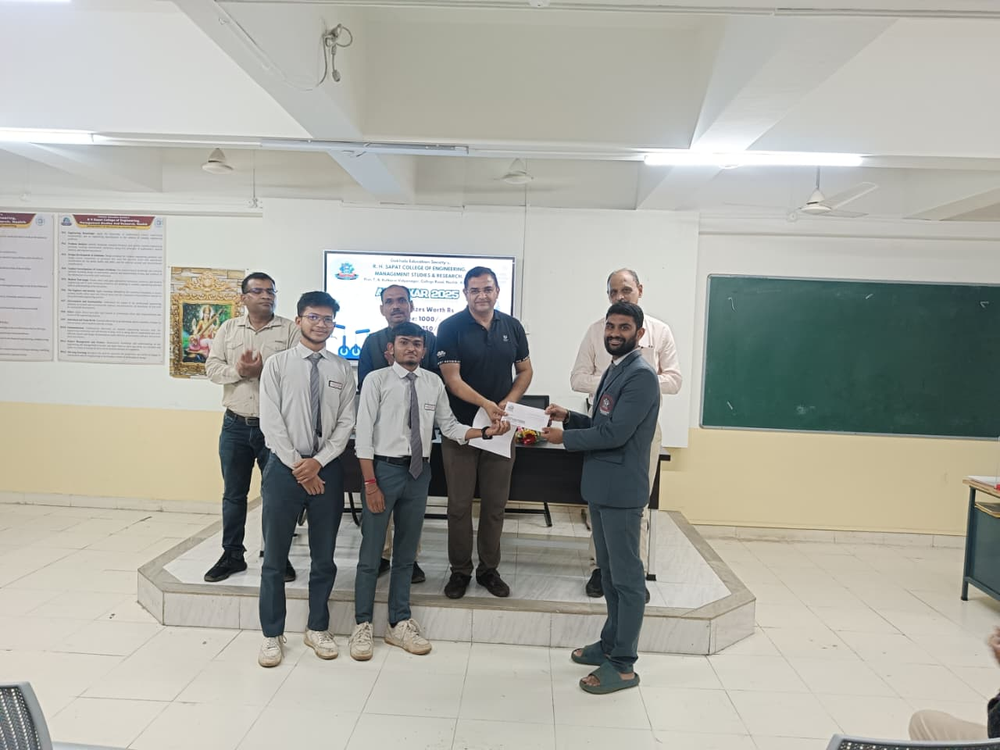

AgroBot is an advanced agricultural automation system that integrates Artificial Intelligence (AI) and Internet of Things (IoT) technologies to improve productivity and efficiency in farming. It is designed to assist farmers in monitoring crop conditions, detecting diseases, and automating repetitive tasks.
The system uses sensors and cameras to collect real-time data from the field. This data is analyzed using intelligent algorithms to provide insights and recommendations for better crop management. AgroBot helps in reducing labor dependency and supports precision agriculture.
Click ☰ to explore the project
Agriculture is a crucial sector that supports global food production and economic stability. However, traditional farming methods rely heavily on manual labor, making processes time-consuming, less efficient, and prone to human error. Farmers often struggle with unpredictable weather conditions, lack of real-time data, and delayed decision-making, which directly impacts crop yield and quality.
With advancements in technology, the integration of Artificial Intelligence (AI) and Internet of Things (IoT) has created new opportunities for smart farming. AgroBot is designed to bridge this gap by providing an intelligent, automated system that assists farmers in monitoring and managing crops effectively. It uses sensors and cameras to gather real-time data and applies AI algorithms to analyze it.
This approach not only improves efficiency but also enables farmers to take timely and informed decisions, leading to better productivity and sustainable agricultural practices.
The development of AgroBot follows a systematic and structured approach to ensure efficiency and reliability. The first step involves requirement analysis, where the challenges faced by farmers are identified and studied in detail. This helps in defining the system objectives and functionality.
This step-by-step methodology ensures that the system is robust, scalable, and capable of performing effectively under real-world farming conditions.
The AgroBot system successfully demonstrated its ability to monitor agricultural fields in real time and detect crop diseases using AI-based image processing techniques. The sensors accurately collected environmental data such as soil moisture and temperature, which was then processed to generate useful insights.
The implementation showed that automation significantly reduces manual effort while improving efficiency and accuracy. Farmers can access real-time information and take necessary actions promptly, which helps in preventing crop damage and improving yield.
Overall, the results validate the effectiveness of integrating AI and IoT in agriculture and highlight the potential of AgroBot as a practical solution for modern farming challenges.
The AgroBot project achieved its primary objective of developing a smart agricultural system that combines technology with practical farming needs. It demonstrates how modern tools can be effectively used to solve traditional problems in agriculture.
The system also proves to be cost-effective and scalable, making it suitable for adoption by farmers on a larger scale in the future.

AgroBot represents a significant advancement in the field of smart agriculture by integrating Artificial Intelligence, Internet of Things, and automation technologies. The system successfully addresses key challenges faced by farmers, such as labor shortages, lack of real-time monitoring, and delayed decision-making.
By providing accurate data and intelligent analysis, AgroBot enables farmers to improve productivity and reduce costs. The project highlights the importance of adopting modern technologies in agriculture to achieve sustainable and efficient farming practices.
Overall, AgroBot serves as a practical and innovative solution that has the potential to transform traditional farming into a more advanced and intelligent system.
Future enhancements will focus on making the AgroBot system more intelligent, efficient, and user-friendly. By incorporating advanced technologies such as cloud computing and data analytics, the system can provide deeper insights and better control to farmers.
These improvements will enable large-scale deployment and contribute to the development of fully automated smart farms in the future.
The AgroBot project was successfully presented at the prestigious Avishkar Institute Level Competition, where it secured 2nd Prize among numerous innovative projects. This achievement reflects the originality, technical strength, and practical relevance of the project.
The recognition received at the competition highlights the potential impact of AgroBot in the field of smart agriculture. It also demonstrates the team's ability to apply theoretical knowledge to solve real-world problems effectively.
This accomplishment serves as a motivation to further enhance the project and explore new possibilities in agricultural automation and intelligent systems.


AgroBot is an academic project developed with the aim of addressing real-world agricultural challenges through the application of modern technologies such as Artificial Intelligence and Internet of Things. The project focuses on creating a smart, automated system that assists farmers in improving productivity and efficiency.
It demonstrates the practical implementation of engineering concepts and highlights the importance of innovation in solving industry problems. The project also reflects the growing trend of integrating technology into traditional sectors like agriculture.
AgroBot stands as an example of how academic learning can be transformed into impactful real-world solutions.
Email: your@email.com
If you have any queries or would like to know more about the AgroBot project, feel free to reach out. We welcome suggestions, feedback, and opportunities for collaboration.
This project aims to contribute to the advancement of smart agriculture, and your input can help improve and expand its capabilities further.